Armaduras, escudos y accesorios
Armaduras, escudos y accesorios en Valheim – 148 objetos con bioma, origen, herramienta necesaria, receta y uso.
No se encontró ningún objeto.
 Aletas del Destino
Aletas del Destino
Vacía tu mente mientras te vuelves informe y te fundes con el agua.
Cómo conseguirlo
- Fabricar: Forja a partir de 5 ×
 Quitina, 5 ×
Quitina, 5 ×  Escama de serpiente, 1 ×
Escama de serpiente, 1 × 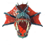
Trofeo de serpiente
 Armadura de escamas de hierro
Armadura de escamas de hierro
Una armadura de escamas de hierro que puede desviarlo todo, excepto los golpes demasiado fuertes.
Cómo conseguirlo
- Fabricar: Forja (nivel 2) a partir de 20 ×
 Hierro, 2 ×
Hierro, 2 ×  Piel de ciervo · por mejora: 5 × Hierro
Piel de ciervo · por mejora: 5 × Hierro
 Brazaletes de Valentía
Brazaletes de Valentía
Tu mente se endurece, al igual que tus golpes.
Cómo conseguirlo
- Fabricar: Forja a partir de 5 ×
 Metal negro, 5 ×
Metal negro, 5 ×  Piel de luey, 1 ×
Piel de luey, 1 ×  Trofeo de luey
Trofeo de luey
 Broche de hierro
Broche de hierro
Una pieza delicada pero defensiva.
Cómo conseguirlo
- Fabricar: Forja a partir de 5 × Hierro, 5 ×
 Corteza ancestral, 1 ×
Corteza ancestral, 1 ×  Trofeo de sanguijuela
Trofeo de sanguijuela
 Broquel nord
Broquel nord
Un método de protección eficaz, con la habilidad adecuada.
Cómo conseguirlo
- Fabricar: Forja negra (nivel 4) a partir de 10 ×
 Oro sanguino, 1 ×
Oro sanguino, 1 ×  Molde: broquel nord, 10 ×
Molde: broquel nord, 10 ×  Leño de construcción · por mejora: 5 × Oro sanguino, 5 × Leño de construcción
Leño de construcción · por mejora: 5 × Oro sanguino, 5 × Leño de construcción - Cocinar: Forja de escarcha a partir de
 Pieza fundida: broquel nord
Pieza fundida: broquel nord
 Capa cinérea
Capa cinérea
En esta capa hay finos hilos de metal entretejidos que crear un patrón intrincado, como un destino tejido por las propias nornas.
Cómo conseguirlo
- Fabricar: Forja negra (nivel 3) a partir de 6 ×
 Pellejo de cenicerdo, 2 ×
Pellejo de cenicerdo, 2 ×  Tendón de Morgen, 5 ×
Tendón de Morgen, 5 ×  Flametal · por mejora: 2 × Pellejo de cenicerdo
Flametal · por mejora: 2 × Pellejo de cenicerdo
 Capa de cenicerdo
Capa de cenicerdo
Esta gruesa capa atrapa el viento, de manera similar a la vela de un barco.
Cómo conseguirlo
- Fabricar: Mesa de galdr (nivel 2) a partir de 6 × Pellejo de cenicerdo, 2 × Tendón de Morgen · por mejora: 2 × Pellejo de cenicerdo
 Capa de lino
Capa de lino
Capa de viajero simple.
Cómo conseguirlo
- Fabricar: Banco de trabajo (nivel 2) a partir de 20 ×
 Hilo de lino, 1 ×
Hilo de lino, 1 ×  Plata · por mejora: 4 × Hilo de lino
Plata · por mejora: 4 × Hilo de lino
 Capa de luey
Capa de luey
Piel de una de las grandes bestias. Es gruesa y cálida.
Cómo conseguirlo
- Fabricar: Banco de trabajo (nivel 2) a partir de 6 × Piel de luey, 2 × Plata · por mejora: 2 × Piel de luey
 Capa de Odín
Capa de Odín
Los mejores guerreros de Odín se merecen la mejor tela.
Cómo conseguirlo
- Fabricar: Banco de trabajo a partir de 10 ×
 Trozos de cuero, 4 ×
Trozos de cuero, 4 ×  Carbón · por mejora: 5 × Trozos de cuero, 2 × Carbón
Carbón · por mejora: 5 × Trozos de cuero, 2 × Carbón
 Capa de pelo de lobo
Capa de pelo de lobo
Los lobos son supervivientes por naturaleza, pero este tuvo mala suerte. Su piel te dará calorcito en la nieve.
Cómo conseguirlo
- Fabricar: Banco de trabajo (nivel 2) a partir de 6 ×
 Piel de lobo, 4 × Plata, 1 ×
Piel de lobo, 4 × Plata, 1 ×  Trofeo de lobo · por mejora: 4 × Piel de lobo, 2 × Plata
Trofeo de lobo · por mejora: 4 × Piel de lobo, 2 × Plata
 Capa de piel de alce
Capa de piel de alce
Una capa cálida con delicados detalles de oro hilado.
Cómo conseguirlo
- Fabricar: Forja negra (nivel 4) a partir de 6 ×
 Piel de alce, 2 ×
Piel de alce, 2 × 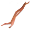
Tendón de alce, 5 ×Oro sanguino · por mejora: 3 × Piel de alce, 1 × Tendón de alce, 2 × Oro sanguino
 Capa de piel de ciervo
Capa de piel de ciervo
Chic y rústica.
Cómo conseguirlo
- Fabricar: Banco de trabajo (nivel 2) a partir de 4 × Piel de ciervo, 5 ×
 Fragmentos de hueso · por mejora: 4 × Piel de ciervo, 5 × Fragmentos de hueso
Fragmentos de hueso · por mejora: 4 × Piel de ciervo, 5 × Fragmentos de hueso
 Capa de piel de trol
Capa de piel de trol
La piel de trol es resistente y flexible.
Cómo conseguirlo
- Fabricar: Banco de trabajo (nivel 2) a partir de 10 ×
 Piel de trol, 10 × Fragmentos de hueso · por mejora: 5 × Piel de trol, 5 × Fragmentos de hueso
Piel de trol, 10 × Fragmentos de hueso · por mejora: 5 × Piel de trol, 5 × Fragmentos de hueso
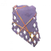
Capa del InvocadorHay una extraña magia tejida en esta capa, que la hace ligera y cálida.
Cómo conseguirlo
- Fabricar: Mesa de galdr (nivel 4) a partir de 6 ×
 Piel de foca, 2 ×
Piel de foca, 2 ×  Hilo de Norna, 5 × Oro sanguino, 15 ×
Hilo de Norna, 5 × Oro sanguino, 15 ×  Eitr refinado · por mejora: 3 × Piel de foca, 1 × Hilo de Norna, 2 × Oro sanguino, 5 × Eitr refinado
Eitr refinado · por mejora: 3 × Piel de foca, 1 × Hilo de Norna, 2 × Oro sanguino, 5 × Eitr refinado
 Capa emplumada
Capa emplumada
Poniéndote esta capa te hace sentir ligero, ¡Casi como si pudieras volar!
Cómo conseguirlo
- Fabricar: Mesa de galdr a partir de 10 ×
 Plumas, 5 ×
Plumas, 5 ×  Piel escamosa, 20 × Eitr refinado · por mejora: 2 × Plumas, 5 × Piel escamosa, 3 × Eitr refinado
Piel escamosa, 20 × Eitr refinado · por mejora: 2 × Plumas, 5 × Piel escamosa, 3 × Eitr refinado
 Capucha de Ask
Capucha de Ask
Como primer hombre de Midgard, Ask sabía que era importante no llamar mucho la atención.
Cómo conseguirlo
- Fabricar: Forja negra (nivel 3) a partir de 15 × Hilo de lino, 4 × Piel de luey, 10 × Pellejo de cenicerdo · por mejora: 10 × Hilo de lino, 2 × Piel de luey, 5 × Pellejo de cenicerdo
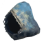
Capucha de EmblaHasta la primera hechicera valoraba el misticismo de cubrirse la cara. Se rumorea que honrarla de esta manera hará que tus hechizos sean aún más poderosos.
Cómo conseguirlo
- Fabricar: Mesa de galdr (nivel 2) a partir de 16 × Hilo de lino, 15 × Eitr refinado, 2 × Pellejo de cenicerdo · por mejora: 8 × Hilo de lino, 5 × Eitr refinado
 Capucha de Fenris
Capucha de Fenris
Con sus ojos sabios y astutos, la bestia era capaz de evaluar la fuerza de un guerrero con un solo atisbo.
Cómo conseguirlo
- Fabricar: Banco de trabajo (nivel 2) a partir de 20 ×
 Pelo de Fenris, 2 × Piel de lobo, 1 ×
Pelo de Fenris, 2 × Piel de lobo, 1 ×  Trofeo de cultista · por mejora: 5 × Pelo de Fenris, 4 × Piel de lobo
Trofeo de cultista · por mejora: 5 × Pelo de Fenris, 4 × Piel de lobo
 Capucha de la Vanguardia
Capucha de la Vanguardia
Algo para proteger tu cuello tanto de los elementos como de los afilados dientes del enemigo.
Cómo conseguirlo
- Fabricar: Forja negra (nivel 4) a partir de 5 × Piel de foca, 1 ×
 Molde: capucha de la Vanguardia, 5 × Piel de alce, 1 × Tendón de alce · por mejora: 3 × Piel de foca, 3 × Piel de alce, 1 × Tendón de alce
Molde: capucha de la Vanguardia, 5 × Piel de alce, 1 × Tendón de alce · por mejora: 3 × Piel de foca, 3 × Piel de alce, 1 × Tendón de alce - Cocinar: Forja de escarcha a partir de
 Pieza fundida: capucha de la Vanguardia
Pieza fundida: capucha de la Vanguardia
 Capucha de Odín
Capucha de Odín
Los mejores guerreros de Odín se merecen la mejor tela.
Cómo conseguirlo
- Fabricar: Banco de trabajo a partir de 10 × Trozos de cuero, 4 × Carbón · por mejora: 5 × Trozos de cuero, 2 × Carbón
 Capucha de piel de lox
Capucha de piel de lox
Ve el mundo como lo haría un lox.
Cómo conseguirlo
- Fabricar: Banco de trabajo (nivel 2) a partir de 4 × Piel de luey, 4 × Fragmentos de hueso, 2 ×
 Raíces de writhan · por mejora: 2 × Piel de luey, 2 × Fragmentos de hueso, 1 × Raíces de writhan
Raíces de writhan · por mejora: 2 × Piel de luey, 2 × Fragmentos de hueso, 1 × Raíces de writhan
 Capucha tejida en Eitr
Capucha tejida en Eitr
La hechicería misma se muestra en los ojos, por lo que la mayoría de los magos llevan capuchas para disfrazar sus ocultas ocupaciones.
Cómo conseguirlo
- Fabricar: Mesa de galdr a partir de 16 × Hilo de lino, 15 × Eitr refinado, 2 × Hierro · por mejora: 8 × Hilo de lino, 5 × Eitr refinado
 Casco acolchado
Casco acolchado
Se ajusta de maravilla y la mano de obra es exquisita.
Cómo conseguirlo
- Fabricar: Forja a partir de 10 × Hierro, 15 × Hilo de lino · por mejora: 5 × Hierro, 10 × Hilo de lino
 Casco de bronce
Casco de bronce
Te ayudará a mantener los sesos en la mollera.
Cómo conseguirlo
- Fabricar: Forja a partir de 5 ×
 Bronce, 2 × Piel de ciervo · por mejora: 3 × Bronce
Bronce, 2 × Piel de ciervo · por mejora: 3 × Bronce
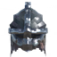
Casco de CaparazónLos demás podrían decir que luces como una hormiga gigante. Pero solo lo dirán una vez.
Cómo conseguirlo
- Fabricar: Forja negra a partir de 16 ×
 Caparazón, 3 × Piel escamosa, 2 ×
Caparazón, 3 × Piel escamosa, 2 ×  Mandíbula, 4 × Eitr refinado · por mejora: 8 × Caparazón, 1 × Piel escamosa, 2 × Eitr refinado
Mandíbula, 4 × Eitr refinado · por mejora: 8 × Caparazón, 1 × Piel escamosa, 2 × Eitr refinado
 Casco de cuero
Casco de cuero
Capucha de cuero endurecido.
Cómo conseguirlo
- Fabricar: Banco de trabajo (nivel 2) a partir de 6 × Piel de ciervo · por mejora: 6 × Piel de ciervo, 5 × Fragmentos de hueso
 Casco de cuero de trol
Casco de cuero de trol
La piel de trol es difícil de trabajar, pero sirve para hacer armaduras excepcionales.
Cómo conseguirlo
- Fabricar: Banco de trabajo (nivel 2) a partir de 5 × Piel de trol, 3 × Fragmentos de hueso · por mejora: 2 × Piel de trol, 1 × Fragmentos de hueso
 Casco de hierro
Casco de hierro
Un casco de hierro lustrado, digno de cualquier héroe.
Cómo conseguirlo
- Fabricar: Forja a partir de 20 × Hierro, 2 × Piel de ciervo · por mejora: 5 × Hierro
 Casco de llametal
Casco de llametal
Mientras lleves este casco, tus enemigos se lo pensarán dos veces antes de intentar arrancarte la cabeza de un mordisco.
Cómo conseguirlo
- Fabricar: Forja negra (nivel 3) a partir de 16 × Flametal, 3 × Pellejo de cenicerdo, 2 ×
 Hueso carbonizado, 4 × Eitr refinado · por mejora: 8 × Flametal, 1 × Pellejo de cenicerdo, 2 × Eitr refinado
Hueso carbonizado, 4 × Eitr refinado · por mejora: 8 × Flametal, 1 × Pellejo de cenicerdo, 2 × Eitr refinado
 Casco dracónico
Casco dracónico
Un casco con muchos detalles y una mano de obra excelente.
Cómo conseguirlo
- Fabricar: Forja a partir de 20 × Plata, 2 × Piel de lobo, 2 ×
 Trofeo de draco · por mejora: 5 × Plata
Trofeo de draco · por mejora: 5 × Plata
 Chaqueta de piel de lox
Chaqueta de piel de lox
Todavía conserva un intenso olor almizclado.
Cómo conseguirlo
- Fabricar: Banco de trabajo (nivel 2) a partir de 5 × Piel de luey, 8 × Fragmentos de hueso, 2 ×
 Raíz · por mejora: 6 × Piel de luey, 4 × Fragmentos de hueso, 1 × Raíz
Raíz · por mejora: 6 × Piel de luey, 4 × Fragmentos de hueso, 1 × Raíz
 Cinta para el pelo
Cinta para el pelo
Está un poco... húmeda.
Cómo conseguirlo
- Comprar: Hildir · 175 monedas
 Colgante de Bronce
Colgante de Bronce
Un hermoso colgante que alberga la resistencia de un bjorn.
Cómo conseguirlo
- Fabricar: Forja a partir de 5 × Bronce, 1 ×
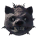
Trofeo de Bjorn, 3 × Rubí
Rubí
 Coraza de Ask
Coraza de Ask
El primer hombre de Midgard supo proteger sus órganos más vitales, quizás con una coraza como esta.
Cómo conseguirlo
- Fabricar: Forja negra (nivel 3) a partir de 15 × Hilo de lino, 4 × Piel de luey, 10 × Pellejo de cenicerdo · por mejora: 10 × Hilo de lino, 2 × Piel de luey, 5 × Pellejo de cenicerdo
 Coraza de Caparazón
Coraza de Caparazón
Una coraza elaborada en base al bruñido caparazón de un insecto gigante.
Cómo conseguirlo
- Fabricar: Forja negra a partir de 20 × Caparazón, 3 × Piel escamosa, 5 × Hierro, 4 × Eitr refinado · por mejora: 10 × Caparazón, 1 × Piel escamosa, 2 × Eitr refinado
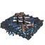
Coraza de llametalEsta fusión de misterioso llametal y huesos carbonizados sirve como una capa protectora más resistente que cualquier cosa que puedas encontrar en Midgard.
Cómo conseguirlo
- Fabricar: Forja negra (nivel 3) a partir de 20 × Flametal, 3 × Pellejo de cenicerdo, 5 × Hueso carbonizado, 1 ×
 Corazón de Morgen · por mejora: 10 × Flametal, 1 × Pellejo de cenicerdo
Corazón de Morgen · por mejora: 10 × Flametal, 1 × Pellejo de cenicerdo
 Coraza de placas de bronce
Coraza de placas de bronce
Pechera recubierta de bronce.
Cómo conseguirlo
- Fabricar: Forja a partir de 5 × Bronce, 2 × Piel de ciervo · por mejora: 3 × Bronce
 Coraza de raíces
Coraza de raíces
Está forjado con elegancia y es tan resistente que puede desviar las espadas más afiladas.
Cómo conseguirlo
- Fabricar: Banco de trabajo (nivel 2) a partir de 10 × Raíz, 10 × Corteza ancestral, 2 × Piel de ciervo · por mejora: 2 × Raíz, 5 × Corteza ancestral
 Coraza del Protector
Coraza del Protector
Piel, cuero y metal trabajan juntos para desviar los golpes del enemigo.
Cómo conseguirlo
- Fabricar: Forja negra (nivel 4) a partir de 20 × Oro sanguino, 1 ×
 Molde: coraza del Protector, 8 × Piel de alce, 4 ×
Molde: coraza del Protector, 8 × Piel de alce, 4 ×  Correas de cuero · por mejora: 15 × Oro sanguino, 3 × Piel de alce, 3 × Correas de cuero
Correas de cuero · por mejora: 15 × Oro sanguino, 3 × Piel de alce, 3 × Correas de cuero - Cocinar: Forja de escarcha a partir de
 Pieza fundida: coraza del Protector
Pieza fundida: coraza del Protector
Corazón de cristal
Un fragmento de dolor y desesperación congelados.
Cómo conseguirlo
- Fabricar: Forja a partir de 5 × Plata, 5 ×
 Cristal, 1 ×
Cristal, 1 ×  Trofeo de gólem de piedra
Trofeo de gólem de piedra
 Corazón de fuego
Corazón de fuego
Entre los latidos del corazón se oye que arde de deseo.
Cómo conseguirlo
- Fabricar: Forja negra a partir de 5 × Flametal, 5 ×
 Azufre, 1 ×
Azufre, 1 ×  Núcleo fundido, 1 ×
Núcleo fundido, 1 ×  Trofeo de Morgen
Trofeo de Morgen
 Corazón del Bosque
Corazón del Bosque
Late con los fragmentos de una vida antigua.
Cómo conseguirlo
- Fabricar: Forja a partir de 5 × Bronce, 5 ×
 Semilla milenaria, 1 ×
Semilla milenaria, 1 ×  Trofeo del grisucio chamán
Trofeo del grisucio chamán
 Corona de bruja
Corona de bruja
Dicen que el alma de una bruja puede otorgar extraños poderes a los mortales...
Cómo conseguirlo
- Fabricar: Forja negra a partir de 5 × Oro sanguino, 5 × Hilo de Norna, 1 ×
 Trofeo de Hexen
Trofeo de Hexen
 Corona de raíces
Corona de raíces
Un elaborado tocado tan intrincado como doloroso.
Cómo conseguirlo
- Comprar: La bruja del pantano · 3000 monedas · tras derrotar a Marchitado
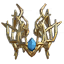
Corona de ValheimUna gloriosa recompensa para quienes realmente lo merecen.
Cómo conseguirlo
- Fabricar: Forja negra (nivel 4) a partir de 5 × Oro sanguino, 1 ×
 Joya de la corona
Joya de la corona
 Degollador
Degollador
Garra, hueso y oro: dales sangre y te concederán un don.
Cómo conseguirlo
- Fabricar: Forja negra a partir de 5 × Oro sanguino, 5 ×
 Garras largas, 1 ×
Garras largas, 1 ×  Trofeo de alce
Trofeo de alce
 Diadema de Dverger
Diadema de Dverger
Una fuente portable de luz perpetua para los exploradores de mazmorras.
Cómo conseguirlo
- Comprar: Haldor · 620 monedas
 Escudo de aros
Escudo de aros
El auténtico compañero de todo guerrero, un escudo con aros de hierro.
Cómo conseguirlo
- Fabricar: Forja (nivel 2) a partir de 10 ×
 Madera noble, 8 × Hierro · por mejora: 10 × Madera noble, 4 × Hierro
Madera noble, 8 × Hierro · por mejora: 10 × Madera noble, 4 × Hierro
 Escudo de caparazón
Escudo de caparazón
El casi indestructible caparazón de tus enemigos lo convierte en un excelente escudo.
Cómo conseguirlo
- Fabricar: Forja negra a partir de 20 × Caparazón, 3 × Piel escamosa, 10 × Eitr refinado · por mejora: 10 × Caparazón, 3 × Piel escamosa, 3 × Eitr refinado
 Escudo de escamas de serpiente
Escudo de escamas de serpiente
Un escudo resistente de escamas superpuestas.
Cómo conseguirlo
- Fabricar: Forja (nivel 3) a partir de 10 × Madera noble, 4 × Hierro, 8 × Escama de serpiente · por mejora: 10 × Madera noble, 2 × Hierro, 4 × Escama de serpiente
 Escudo de llametal
Escudo de llametal
El escudo es y siempre será el arma más importante de un vikingo.
Cómo conseguirlo
- Fabricar: Forja negra (nivel 3) a partir de 10 ×
 Madera de ceniza, 8 × Flametal, 2 × Pellejo de cenicerdo · por mejora: 10 × Madera de ceniza, 4 × Flametal, 2 × Pellejo de cenicerdo
Madera de ceniza, 8 × Flametal, 2 × Pellejo de cenicerdo · por mejora: 10 × Madera de ceniza, 4 × Flametal, 2 × Pellejo de cenicerdo
 Escudo de madera
Escudo de madera
Un escudo de madera simple.
Cómo conseguirlo
- Fabricar: Banco de trabajo a partir de 10 ×
 Madera, 4 ×
Madera, 4 ×  Resina, 4 × Trozos de cuero · por mejora: 5 × Madera, 2 × Resina, 2 × Trozos de cuero
Resina, 4 × Trozos de cuero · por mejora: 5 × Madera, 2 × Resina, 2 × Trozos de cuero
 Escudo de metal negro
Escudo de metal negro
Está fabricado con el metal más fuerte y puede desviar hasta las espadas más poderosas.
Cómo conseguirlo
- Fabricar: Forja (nivel 3) a partir de 10 × Madera noble, 8 × Metal negro, 5 ×
 Cadena · por mejora: 10 × Madera noble, 4 × Metal negro, 2 × Cadena
Cadena · por mejora: 10 × Madera noble, 4 × Metal negro, 2 × Cadena
 Escudo de plata
Escudo de plata
Un escudo de plata radiante.
Cómo conseguirlo
- Fabricar: Forja (nivel 3) a partir de 10 × Madera noble, 8 × Plata · por mejora: 10 × Madera noble, 4 × Plata
 Escudo de raíces
Escudo de raíces
Raíces flexibles entrelazadas hasta formar un escudo sorprendentemente resistente.
Cómo conseguirlo
- Fabricar: Banco de trabajo (nivel 2) a partir de 10 × Madera noble, 1 × Raíces de writhan · por mejora: 5 × Madera noble, 2 × Raíces de writhan
 Escudo de torre de hierro
Escudo de torre de hierro
Un escudo grande de hierro resistente.
Cómo conseguirlo
- Fabricar: Forja (nivel 2) a partir de 15 × Madera noble, 10 × Hierro · por mejora: 10 × Madera noble, 5 × Hierro
 Escudo de torre de hueso
Escudo de torre de hueso
Los huesos de guerreros muertos protegen de maravilla.
Cómo conseguirlo
- Fabricar: Banco de trabajo (nivel 3) a partir de 10 × Madera, 10 × Fragmentos de hueso, 3 ×
 Trofeo de esqueleto · por mejora: 5 × Madera, 5 × Fragmentos de hueso
Trofeo de esqueleto · por mejora: 5 × Madera, 5 × Fragmentos de hueso
 Escudo de torre de llametal
Escudo de torre de llametal
La mejor defensa es una gran defensa.
Cómo conseguirlo
- Fabricar: Forja negra (nivel 3) a partir de 15 × Madera de ceniza, 10 × Flametal, 5 × Pellejo de cenicerdo · por mejora: 10 × Madera de ceniza, 4 × Flametal, 2 × Pellejo de cenicerdo
 Escudo de torre de madera
Escudo de torre de madera
Un escudo de madera pesado y tosco.
Cómo conseguirlo
- Fabricar: Banco de trabajo a partir de 10 × Madera, 6 × Trozos de cuero · por mejora: 5 × Madera, 3 × Trozos de cuero
 Escudo de torre de metal negro
Escudo de torre de metal negro
Un escudo de torre de un metal negro y reluciente.
Cómo conseguirlo
- Fabricar: Forja (nivel 3) a partir de 15 × Madera noble, 10 × Metal negro, 7 × Cadena · por mejora: 10 × Madera noble, 4 × Metal negro, 2 × Cadena
 Escudo nord
Escudo nord
Mantente a salvo, y hazlo con estilo.
Cómo conseguirlo
- Fabricar: Forja negra (nivel 4) a partir de 15 × Oro sanguino, 1 × Molde: escudo nord, 10 × Leño de construcción · por mejora: 8 × Oro sanguino, 5 × Leño de construcción
- Cocinar: Forja de escarcha a partir de
 Pieza fundida: escudo nord
Pieza fundida: escudo nord
 Faldón de hueso vil
Faldón de hueso vil
Gruesas pieles y fragmentos de hueso entretejidos en una robusta falda.
Cómo conseguirlo
- Fabricar: Forja (nivel 2) a partir de 10 ×
 Piel de Bjorn, 1 ×
Piel de Bjorn, 1 ×  Caja torácica vil, 4 × Hilo de lino · por mejora: 5 × Piel de Bjorn, 1 × Caja torácica vil, 1 × Hilo de lino
Caja torácica vil, 4 × Hilo de lino · por mejora: 5 × Piel de Bjorn, 1 × Caja torácica vil, 1 × Hilo de lino
 Fúrcula
Fúrcula
Este hueso milenario recuerda la ubicación de cientos de cosas olvidadas.
Cómo conseguirlo
- Lo suelta: Tuétano · Pantano
 Gambesón acolchado
Gambesón acolchado
Está forjado con elegancia y es tan resistente que puede desviar las espadas más afiladas.
Cómo conseguirlo
- Fabricar: Forja (nivel 2) a partir de 10 × Hierro, 20 × Hilo de lino · por mejora: 3 × Hierro, 10 × Hilo de lino
 Gorra festiva
Gorra festiva
Cuando te pones esta gorra, ¡no puedes evitar sentirte alegre!
Cómo conseguirlo
- Fabricar: Banco de trabajo (nivel 2) a partir de 2 × Piel de ciervo, 1 × Bronce, 1 × Piel de Bjorn, 1 ×
 Perla de ámbar · por mejora: 1 × Piel de ciervo, 1 × Bronce
Perla de ámbar · por mejora: 1 × Piel de ciervo, 1 × Bronce
 Gorro de Navidad
Gorro de Navidad
Un gorro rojo al más puro estilo de los gnomos.
Cómo conseguirlo
- Comprar: Haldor · 100 monedas
 Gorro de pescar
Gorro de pescar
Solo los aventureros más avezados podrán echarle el anzuelo a este gorro la mar de chulo.
Cómo conseguirlo
- Fabricar: Banco de trabajo a partir de 1 ×
 Perca, 1 ×
Perca, 1 ×  Lucio, 1 ×
Lucio, 1 ×  Atún, 1 ×
Atún, 1 × 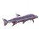
Tetra, 1 × Pez troll, 1 ×
Pez troll, 1 ×  Arenque gigante, 1 ×
Arenque gigante, 1 ×  Mero, 1 ×
Mero, 1 ×  Bacalao de coral, 1 ×
Bacalao de coral, 1 ×  Rape, 1 ×
Rape, 1 ×  Salmón norteño, 1 ×
Salmón norteño, 1 ×  Magmapez, 1 ×
Magmapez, 1 ×  Pez globo · por mejora: 1 × Perca, 1 × Lucio, 1 × Atún, 1 × Tetra, 1 × Pez troll, 1 × Arenque gigante, 1 × Mero, 1 × Bacalao de coral, 1 × Rape, 1 × Salmón norteño, 1 × Magmapez, 1 × Pez globo
Pez globo · por mejora: 1 × Perca, 1 × Lucio, 1 × Atún, 1 × Tetra, 1 × Pez troll, 1 × Arenque gigante, 1 × Mero, 1 × Bacalao de coral, 1 × Rape, 1 × Salmón norteño, 1 × Magmapez, 1 × Pez globo
 Gorro de piel gris
Gorro de piel gris
Un cálido gorro hecho de lana de primerísima calidad.
Cómo conseguirlo
- Comprar: Hildir · 300 monedas · tras devolver el Cofre de bronce de Hildir
 Gorro de piel marrón
Gorro de piel marrón
Un cálido gorro hecho de piel de primerísima calidad.
Cómo conseguirlo
- Comprar: Hildir · 200 monedas · tras devolver el Cofre de latón de Hildir
 Gorro naranja extravagante
Gorro naranja extravagante
Un extravagante gorro de color naranja.
Cómo conseguirlo
- Comprar: Hildir · 300 monedas · tras devolver el Cofre de bronce de Hildir
 Gorro sencillo morado
Gorro sencillo morado
Un gorro de color morado sencillo pero muy elegante.
Cómo conseguirlo
- Comprar: Hildir · 150 monedas
 Gorro sencillo rojo
Gorro sencillo rojo
Un gorro de color rojo sencillo pero muy elegante.
Cómo conseguirlo
- Comprar: Hildir · 150 monedas
 Gorro verde extravagante
Gorro verde extravagante
Un extravagante gorro de color verde.
Cómo conseguirlo
- Comprar: Hildir · 250 monedas · tras devolver el Cofre de plata de Hildir
 Gran escudo nord
Gran escudo nord
¡Tus enemigos no pueden golpearte si no pueden verte!
Cómo conseguirlo
- Fabricar: Forja negra (nivel 4) a partir de 20 × Oro sanguino, 1 ×
 Molde: gran escudo nord, 20 × Leño de construcción · por mejora: 10 × Oro sanguino, 10 × Leño de construcción
Molde: gran escudo nord, 20 × Leño de construcción · por mejora: 10 × Oro sanguino, 10 × Leño de construcción - Cocinar: Forja de escarcha a partir de
 Pieza fundida: gran escudo nord
Pieza fundida: gran escudo nord
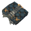
Grebas acolchadasProtección para las piernas fabricada con gran habilidad.
Cómo conseguirlo
- Fabricar: Forja (nivel 2) a partir de 10 × Hierro, 20 × Hilo de lino · por mejora: 3 × Hierro, 10 × Hilo de lino
 Grebas de hierro
Grebas de hierro
Grebas de hierro para protegerte las piernas.
Cómo conseguirlo
- Fabricar: Forja (nivel 2) a partir de 20 × Hierro, 2 × Piel de ciervo · por mejora: 5 × Hierro
 Grebas de llametal
Grebas de llametal
Los pantalones pesados aíslan del calor, mientras que las grebas sólidas mantienen las espinillas a salvo de golpes bajos.
Cómo conseguirlo
- Fabricar: Forja negra (nivel 3) a partir de 20 × Flametal, 3 × Pellejo de cenicerdo, 5 × Hueso carbonizado · por mejora: 10 × Flametal, 1 × Pellejo de cenicerdo
 Grillete resonante
Grillete resonante
Una cadena afilada para el tobillo.
Cómo conseguirlo
- Fabricar: Forja negra a partir de 5 × Eitr refinado, 5 × Piel escamosa, 1 × Mandíbula, 1 ×
 Trofeo de buscador
Trofeo de buscador
 Jörmundling
Jörmundling
Desde el interior resuenan gritos angustiados.
Cómo conseguirlo
- Fabricar: Forja negra a partir de 5 × Flametal, 5 × Eitr refinado, 1 ×
 Piedra de sangre, 1 ×
Piedra de sangre, 1 ×  Trofeo de valquiria caída
Trofeo de valquiria caída
 Luz de Wisp
Luz de Wisp
Un wisp vinculado que te guiará a través de las más frondosas neblinas.
Cómo conseguirlo
 Mallas de Fenris
Mallas de Fenris
La bestia tenía patas esbeltas y fuertes que le permitían dar largos saltos.
Cómo conseguirlo
- Fabricar: Banco de trabajo (nivel 2) a partir de 20 × Pelo de Fenris, 5 × Piel de lobo, 10 × Trozos de cuero · por mejora: 5 × Pelo de Fenris, 3 × Piel de lobo, 4 × Trozos de cuero
 Mallas de placas de bronce
Mallas de placas de bronce
Grebas de bronce para protegerte las piernas.
Cómo conseguirlo
- Fabricar: Forja a partir de 5 × Bronce, 2 × Piel de ciervo · por mejora: 3 × Bronce
 Mallas de raíces
Mallas de raíces
Blindaje ligero hecho de antiguas raíces y cortezas entrelazadas de forma extraña.
Cómo conseguirlo
- Fabricar: Banco de trabajo (nivel 2) a partir de 10 × Raíz, 10 × Corteza ancestral, 2 × Piel de ciervo · por mejora: 2 × Raíz, 5 × Corteza ancestral
 Manto de Evasión
Manto de Evasión
Baila con la Muerte al evadir cada ataque enemigo.
Cómo conseguirlo
- Fabricar: Forja a partir de 5 × Metal negro, 1 ×
 Trofeo de fuling berserker, 10 × Hilo de lino
Trofeo de fuling berserker, 10 × Hilo de lino
 Máscara de raíces
Máscara de raíces
Esta trama de raíces y corteza se ajusta a tu cabeza a la perfección.
Cómo conseguirlo
- Fabricar: Banco de trabajo (nivel 2) a partir de 10 × Raíz, 10 × Corteza ancestral, 4 × Trozos de cuero · por mejora: 2 × Raíz, 5 × Corteza ancestral
 Megingjord
Megingjord
Le concede a quien lo lleve una fuerza sobrehumana.
Cómo conseguirlo
- Comprar: Haldor · 950 monedas
 Mentonera de hueso vil
Mentonera de hueso vil
Al llevarla, inspiras miedo a los enemigos y valor a los aliados.
Cómo conseguirlo
- Fabricar: Forja (nivel 2) a partir de 5 × Piel de Bjorn, 1 ×
 Trofeo vil · por mejora: 2 × Piel de Bjorn
Trofeo vil · por mejora: 2 × Piel de Bjorn
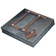
Pantalones de AskEl primer hombre que recorrió Midgard prefirió andar con cuidado. Quienes lleven estos pantalones podrían aprender un par de cosas de él.
Cómo conseguirlo
- Fabricar: Forja negra (nivel 3) a partir de 15 × Hilo de lino, 4 × Piel de luey, 10 × Pellejo de cenicerdo · por mejora: 10 × Hilo de lino, 2 × Piel de luey, 5 × Pellejo de cenicerdo
 Pantalones de cuero
Pantalones de cuero
Rechinan un poco cuando caminas.
Cómo conseguirlo
- Fabricar: Banco de trabajo (nivel 2) a partir de 6 × Piel de ciervo · por mejora: 6 × Piel de ciervo, 5 × Fragmentos de hueso
 Pantalones de cuero de trol
Pantalones de cuero de trol
Mallas de piel de trol fuerte.
Cómo conseguirlo
- Fabricar: Banco de trabajo (nivel 2) a partir de 5 × Piel de trol · por mejora: 2 × Piel de trol
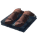
Pantalones de EmblaNunca podremos saber si la primera hechicera realmente llevaba pantalones exactamente iguales a estos.
Cómo conseguirlo
- Fabricar: Mesa de galdr (nivel 2) a partir de 20 × Hilo de lino, 20 × Eitr refinado, 10 × Pellejo de cenicerdo · por mejora: 10 × Hilo de lino, 5 × Eitr refinado
 Pantalones de la Vanguardia
Pantalones de la Vanguardia
Pantalones cálidos adecuados para climas fríos. Las botas ofrecen un excelente agarre en terreno helado.
Cómo conseguirlo
- Fabricar: Forja negra (nivel 4) a partir de 12 × Oro sanguino, 1 ×
 Molde: pantalones de la Vanguardia, 8 ×
Molde: pantalones de la Vanguardia, 8 ×  Fardo de pelo de elaking, 4 × Piel de foca · por mejora: 6 × Oro sanguino, 4 × Fardo de pelo de elaking, 2 × Piel de foca
Fardo de pelo de elaking, 4 × Piel de foca · por mejora: 6 × Oro sanguino, 4 × Fardo de pelo de elaking, 2 × Piel de foca - Cocinar: Forja de escarcha a partir de
 Pieza fundida: pantalones de la Vanguardia
Pieza fundida: pantalones de la Vanguardia
 Pantalones de lobo
Pantalones de lobo
Bombachos de piel de lobo.
Cómo conseguirlo
- Fabricar: Forja (nivel 2) a partir de 20 × Plata, 5 × Piel de lobo, 4 ×
 Colmillo de lobo · por mejora: 5 × Plata, 2 × Piel de lobo, 1 × Colmillo de lobo
Colmillo de lobo · por mejora: 5 × Plata, 2 × Piel de lobo, 1 × Colmillo de lobo
 Pantalones de piel de lox
Pantalones de piel de lox
Suaves, silenciosos y flexibles.
Cómo conseguirlo
- Fabricar: Banco de trabajo (nivel 2) a partir de 5 × Piel de luey, 8 × Fragmentos de hueso, 2 × Raíz · por mejora: 3 × Piel de luey, 4 × Fragmentos de hueso, 1 × Raíz
 Pantalones del Invocador
Pantalones del Invocador
Perneras ajustadas para evitar que el frío toque tu piel.
Cómo conseguirlo
- Fabricar: Mesa de galdr (nivel 3) a partir de 6 × Oro sanguino, 1 ×
 Molde: pantalones del Invocador, 6 × Piel de alce, 5 × Hilo de Norna · por mejora: 3 × Oro sanguino, 3 × Piel de alce, 3 × Hilo de Norna
Molde: pantalones del Invocador, 6 × Piel de alce, 5 × Hilo de Norna · por mejora: 3 × Oro sanguino, 3 × Piel de alce, 3 × Hilo de Norna - Cocinar: Forja de escarcha a partir de
 Pieza fundida: pantalones del Invocador
Pieza fundida: pantalones del Invocador
 Pantalones del Protector
Pantalones del Protector
Botas y pantalones pesados para mantenerte caliente mientras avanzas por la nieve profunda.
Cómo conseguirlo
- Fabricar: Forja negra (nivel 4) a partir de 20 × Oro sanguino, 1 ×
 Molde: pantalones del Protector, 8 × Piel de alce, 4 × Correas de cuero · por mejora: 15 × Oro sanguino, 3 × Piel de alce, 3 × Correas de cuero
Molde: pantalones del Protector, 8 × Piel de alce, 4 × Correas de cuero · por mejora: 15 × Oro sanguino, 3 × Piel de alce, 3 × Correas de cuero - Cocinar: Forja de escarcha a partir de
 Pieza fundida: pantalones del Protector
Pieza fundida: pantalones del Protector
 Pantalones harapientos
Pantalones harapientos
Un remedio bien simple para la desnudez.
Cómo conseguirlo
- Fabricar: Banco de trabajo a partir de 5 × Trozos de cuero · por mejora: 5 × Trozos de cuero
 Pantalones tejidos en Eitr
Pantalones tejidos en Eitr
Los pantalones que llevan los magos siempre han sido especialmente apretados. La incomodidad alimenta el enfoque requerido para la magia...
Cómo conseguirlo
- Fabricar: Mesa de galdr a partir de 20 × Hilo de lino, 20 × Eitr refinado, 10 × Piel escamosa · por mejora: 10 × Hilo de lino, 5 × Eitr refinado
 Pañuelo atado amarillo
Pañuelo atado amarillo
Un práctico pañuelo amarillo para llevar en la cabeza.
Cómo conseguirlo
- Comprar: Hildir · 250 monedas · tras devolver el Cofre de plata de Hildir
 Pañuelo atado azul
Pañuelo atado azul
Un práctico pañuelo azul para llevar en la cabeza.
Cómo conseguirlo
- Comprar: Hildir · 200 monedas · tras devolver el Cofre de latón de Hildir
 Pañuelo trenzado rojo
Pañuelo trenzado rojo
Un bonito pañuelo rojo para llevar en la cabeza.
Cómo conseguirlo
- Comprar: Hildir · 300 monedas · tras devolver el Cofre de bronce de Hildir
 Pañuelo trenzado verde
Pañuelo trenzado verde
Un bonito pañuelo verde para llevar en la cabeza.
Cómo conseguirlo
- Comprar: Hildir · 250 monedas · tras devolver el Cofre de plata de Hildir
 Patrones de Bjorn
Patrones de Bjorn
Si estos intricados diseños pueden proteger a guerreros de tierras distantes, seguramente pueden protegerte también.
Cómo conseguirlo
- Fabricar: Banco de trabajo (nivel 2) a partir de 5 × Piel de Bjorn, 2 ×
 Pata de Bjorn, 4 ×
Pata de Bjorn, 4 ×  Arándanos · por mejora: 2 × Piel de Bjorn, 1 × Arándanos
Arándanos · por mejora: 2 × Piel de Bjorn, 1 × Arándanos
 Pechera de lobo
Pechera de lobo
Jubón de piel de lobo que parece cálido y te da un toque salvaje. Protege del frío.
Cómo conseguirlo
- Fabricar: Forja (nivel 2) a partir de 20 × Plata, 5 × Piel de lobo, 1 × Cadena · por mejora: 5 × Plata, 2 × Piel de lobo
 Pelaje de Fenris
Pelaje de Fenris
La bestia era capaz de tomar aire en gran cantidad para que sus aullidos resonasen a millas de distancia.
Cómo conseguirlo
- Fabricar: Banco de trabajo (nivel 2) a partir de 20 × Pelo de Fenris, 5 × Piel de lobo, 10 × Trozos de cuero · por mejora: 5 × Pelo de Fenris, 3 × Piel de lobo, 4 × Trozos de cuero
 Pendientes Pulsantes
Pendientes Pulsantes
Si prestas mucha atención, puedes oír los débiles ecos de almas perdidas...
Cómo conseguirlo
- Fabricar: Forja negra a partir de 5 × Caparazón, 5 × Eitr refinado, 1 ×
 Trofeo de gjall
Trofeo de gjall
 Peto de la Vanguardia
Peto de la Vanguardia
Armadura de cuero elaborada con maestría, que ofrece gran protección sin limitar los movimientos.
Cómo conseguirlo
- Fabricar: Forja negra (nivel 4) a partir de 12 × Oro sanguino, 1 ×
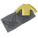
Molde: peto de la Vanguardia, 8 ×Fardo de pelo de elaking, 4 × Correas de cuero · por mejora: 6 × Oro sanguino, 4 × Fardo de pelo de elaking, 2 × Correas de cuero - Cocinar: Forja de escarcha a partir de
 Pieza fundida: peto de la Vanguardia
Pieza fundida: peto de la Vanguardia
 Rodela de bronce
Rodela de bronce
Un escudo de bronce pulido que podrá desviar una espada o dos.
Cómo conseguirlo
 Rodela de caparazón
Rodela de caparazón
La calavera de un buscador es sólida pero no muy pesada, lo cual lo convierte en un perfecto y ágil escudo.
Cómo conseguirlo
- Fabricar: Forja negra a partir de 16 × Caparazón, 3 × Piel escamosa, 10 × Eitr refinado · por mejora: 8 × Caparazón, 3 × Piel escamosa, 3 × Eitr refinado
 Rodela de hierro
Rodela de hierro
Su ligereza y centro curvo la hace excelente para desviar ataques.
Cómo conseguirlo
- Fabricar: Forja (nivel 2) a partir de 10 × Hierro, 4 × Corteza ancestral · por mejora: 5 × Hierro, 1 × Corteza ancestral
 Rodilleras de Caparazón
Rodilleras de Caparazón
Protectores de piernas hechos de un rígido caparazón.
Cómo conseguirlo
- Fabricar: Forja negra a partir de 20 × Caparazón, 3 × Piel escamosa, 5 × Hierro, 4 × Eitr refinado · por mejora: 10 × Caparazón, 1 × Piel escamosa, 2 × Eitr refinado
 Sombrero de paja
Sombrero de paja
Ideal para evitar una insolación.
Cómo conseguirlo
- Comprar: Hildir · 300 monedas · tras devolver el Cofre de latón de Hildir
 Taparrabo de Bjorn
Taparrabo de Bjorn
Puede cubrir todas las partes importantes, pero no mucho más que eso.
Cómo conseguirlo
- Fabricar: Banco de trabajo (nivel 2) a partir de 5 × Piel de Bjorn, 4 × Arándanos · por mejora: 2 × Piel de Bjorn, 1 × Arándanos
 Tobillera
Tobillera
Ligera e imbuida de velocidad.
Cómo conseguirlo
- Fabricar: Forja a partir de 5 × Hierro, 5 ×
 Hueso pálido, 1 ×
Hueso pálido, 1 ×  Trofeo de surtling
Trofeo de surtling
 Tocado de Bjorn
Tocado de Bjorn
Permite que la furia salvaje de un gran oso te consuma.
Cómo conseguirlo
- Fabricar: Banco de trabajo (nivel 2) a partir de 5 × Piel de Bjorn, 1 × Trofeo de Bjorn · por mejora: 2 × Piel de Bjorn
 Tocado del Invocador
Tocado del Invocador
Los espíritus de la tierra acuden cuando los llamas. ¿Se dejan engañar por tu disfraz?
Cómo conseguirlo
- Fabricar: Mesa de galdr (nivel 3) a partir de 2 × Tendón de alce, 1 ×
 Molde: tocado del Invocador, 1 × Trofeo de alce, 3 × Hilo de Norna · por mejora: 1 × Tendón de alce, 2 × Hilo de Norna
Molde: tocado del Invocador, 1 × Trofeo de alce, 3 × Hilo de Norna · por mejora: 1 × Tendón de alce, 2 × Hilo de Norna - Cocinar: Forja de escarcha a partir de
 Pieza fundida: tocado del Invocador
Pieza fundida: tocado del Invocador
 Torso de hueso vil
Torso de hueso vil
Elaborado a partir de los huesos destrozados de un oso atormentado.
Cómo conseguirlo
- Fabricar: Forja (nivel 2) a partir de 4 × Piel de Bjorn, 3 × Caja torácica vil, 4 × Hilo de lino · por mejora: 2 × Piel de Bjorn, 1 × Caja torácica vil, 1 × Hilo de lino
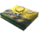
Túnica amarilla con abaloriosTúnica amarilla complementada con abalorios y plata.
Cómo conseguirlo
- Comprar: Hildir · 550 monedas · tras devolver el Cofre de bronce de Hildir
 Túnica amarilla con capa
Túnica amarilla con capa
Túnica amarilla complementada con una capa.
Cómo conseguirlo
- Comprar: Hildir · 450 monedas · tras devolver el Cofre de plata de Hildir
 Túnica azul con abalorios
Túnica azul con abalorios
Túnica azul complementada con abalorios y plata.
Cómo conseguirlo
- Comprar: Hildir · 550 monedas · tras devolver el Cofre de bronce de Hildir
 Túnica azul con capa
Túnica azul con capa
Túnica azul complementada con una capa.
Cómo conseguirlo
- Comprar: Hildir · 450 monedas · tras devolver el Cofre de plata de Hildir
 Túnica de cosecha
Túnica de cosecha
Cuando se trabaja en el campo, es importante vestirse adecuadamente. Una túnica más corta deja entrar una brisa fresca.
Cómo conseguirlo
- Comprar: Hildir · 550 monedas · tras devolver el Cofre de latón de Hildir
 Túnica de cuero
Túnica de cuero
Una túnica hecha con pieles animales.
Cómo conseguirlo
- Fabricar: Banco de trabajo (nivel 2) a partir de 6 × Piel de ciervo · por mejora: 6 × Piel de ciervo, 5 × Fragmentos de hueso
 Túnica de cuero de trol
Túnica de cuero de trol
Despellejar a un trol no es tarea sencilla, pero su cuero es fuerte y cálido.
Cómo conseguirlo
- Fabricar: Banco de trabajo (nivel 2) a partir de 5 × Piel de trol · por mejora: 2 × Piel de trol
 Túnica de Embla
Túnica de Embla
Imbuida del poder de la primera hechicera, esta túnica otorgará una bendición a cualquiera que busque dominar el antiguo arte de la magia.
Cómo conseguirlo
- Fabricar: Mesa de galdr (nivel 2) a partir de 20 × Hilo de lino, 20 × Eitr refinado, 10 × Pellejo de cenicerdo, 5 × Flametal · por mejora: 10 × Hilo de lino, 5 × Eitr refinado, 2 × Flametal
 Túnica del Invocador
Túnica del Invocador
Túnica con ribetes dorados, digna solo de los magos más poderosos.
Cómo conseguirlo
- Fabricar: Mesa de galdr (nivel 3) a partir de 6 × Oro sanguino, 1 ×
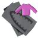
Molde: túnica del Invocador, 6 ×Piel de alce, 5 × Hilo de Norna · por mejora: 3 × Oro sanguino, 3 × Piel de alce, 3 × Hilo de Norna - Cocinar: Forja de escarcha a partir de
 Pieza fundida: túnica del Invocador
Pieza fundida: túnica del Invocador
 Túnica harapienta
Túnica harapienta
Es mejor que nada.
Cómo conseguirlo
- Fabricar: Banco de trabajo a partir de 5 × Trozos de cuero · por mejora: 5 × Trozos de cuero
Túnica roja con abalorios
Túnica roja complementada con abalorios y bronce.
Cómo conseguirlo
- Comprar: Hildir · 550 monedas · tras devolver el Cofre de bronce de Hildir
 Túnica roja con capa
Túnica roja con capa
Túnica roja complementada con una capa.
Cómo conseguirlo
- Comprar: Hildir · 450 monedas · tras devolver el Cofre de plata de Hildir
 Túnica sencilla amarilla
Túnica sencilla amarilla
Una túnica sencilla de color amarillo.
Cómo conseguirlo
- Comprar: Hildir · 350 monedas · tras devolver el Cofre de latón de Hildir
 Túnica sencilla azul
Túnica sencilla azul
Una túnica sencilla de color azul.
Cómo conseguirlo
- Comprar: Hildir · 350 monedas · tras devolver el Cofre de latón de Hildir
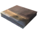
Túnica sencilla naturalUna túnica sencilla.
Cómo conseguirlo
- Comprar: Hildir · 250 monedas
 Túnica sencilla roja
Túnica sencilla roja
Una túnica sencilla de color rojo.
Cómo conseguirlo
- Comprar: Hildir · 350 monedas · tras devolver el Cofre de latón de Hildir
 Túnica tejida en Eitr
Túnica tejida en Eitr
Esta túnica ingeniosamente hecha contiene hechizos y encantamiento tejidos en cada costura y pliegue.
Cómo conseguirlo
- Fabricar: Mesa de galdr a partir de 20 × Hilo de lino, 20 × Eitr refinado, 10 × Plumas, 5 × Piel escamosa · por mejora: 10 × Hilo de lino, 5 × Eitr refinado
 Vestido amarillo con abalorios
Vestido amarillo con abalorios
Vestido amarillo complementado con abalorios y plata.
Cómo conseguirlo
- Comprar: Hildir · 550 monedas · tras devolver el Cofre de bronce de Hildir
 Vestido amarillo con manto
Vestido amarillo con manto
Vestido amarillo complementado con un cálido manto.
Cómo conseguirlo
- Comprar: Hildir · 450 monedas · tras devolver el Cofre de plata de Hildir
 Vestido azul con abalorios
Vestido azul con abalorios
Vestido azul complementado con abalorios y bronce.
Cómo conseguirlo
- Comprar: Hildir · 550 monedas · tras devolver el Cofre de bronce de Hildir
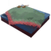
Vestido azul con mantoVestido azul complementado con un cálido manto.
Cómo conseguirlo
- Comprar: Hildir · 450 monedas · tras devolver el Cofre de plata de Hildir
 Vestido de cosecha
Vestido de cosecha
Cuando se trabaja en el campo, es importante vestirse adecuadamente. Este vestido largo mantiene las rodillas cubiertas mientras trabajas.
Cómo conseguirlo
- Comprar: Hildir · 550 monedas · tras devolver el Cofre de latón de Hildir
 Vestido marrón con abalorios
Vestido marrón con abalorios
Vestido marrón complementado con abalorios y plata.
Cómo conseguirlo
- Comprar: Hildir · 550 monedas · tras devolver el Cofre de bronce de Hildir
 Vestido marrón con manto
Vestido marrón con manto
Vestido marrón complementado con un cálido manto.
Cómo conseguirlo
- Comprar: Hildir · 450 monedas · tras devolver el Cofre de plata de Hildir
 Vestido sencillo amarillo
Vestido sencillo amarillo
Un vestido sencillo de color amarillo.
Cómo conseguirlo
- Comprar: Hildir · 350 monedas · tras devolver el Cofre de latón de Hildir
 Vestido sencillo azul
Vestido sencillo azul
Un vestido sencillo de color azul.
Cómo conseguirlo
- Comprar: Hildir · 350 monedas · tras devolver el Cofre de latón de Hildir
 Vestido sencillo marrón
Vestido sencillo marrón
Un vestido sencillo de color marrón.
Cómo conseguirlo
- Comprar: Hildir · 350 monedas · tras devolver el Cofre de latón de Hildir
 Vestido sencillo natural
Vestido sencillo natural
Un vestido sencillo.
Cómo conseguirlo
- Comprar: Hildir · 250 monedas
 Vista de lobo
Vista de lobo
Diadema inspirada en la mente aguda y furiosa de un lobo.
Cómo conseguirlo
- Fabricar: Forja a partir de 5 × Plata, 5 × Colmillo de lobo, 1 ×
 Trofeo de fenring
Trofeo de fenring
 Yelmo del Protector
Yelmo del Protector
Adornado con las alas de la victoria.
Cómo conseguirlo
- Fabricar: Forja negra (nivel 4) a partir de 20 × Oro sanguino, 1 ×
 Molde: yelmo del Protector, 4 × Piel de alce · por mejora: 15 × Oro sanguino, 3 × Piel de alce
Molde: yelmo del Protector, 4 × Piel de alce · por mejora: 15 × Oro sanguino, 3 × Piel de alce - Cocinar: Forja de escarcha a partir de
 Pieza fundida: yelmo del Protector
Pieza fundida: yelmo del Protector